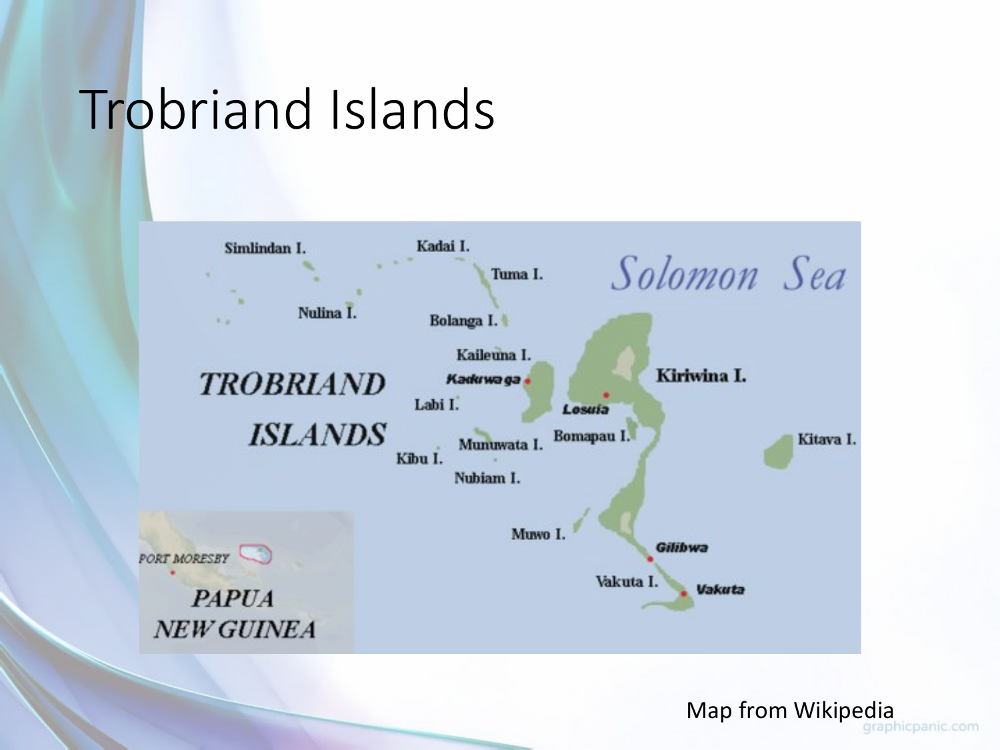

Compare embedded coordination and Kula exchange
Useful first: Classify economic systems across distinct dimensions, Discriminate cooperation and coordination through best responses
Lesson outline
- 02IntroductionSee the main question, learning objectives and prerequisites.
- 03Key definitions and conceptsGet familiar with the important terms and notation.
- 04Embedded economies, reciprocity and the Kula ringSource: Source: Source:
- 05Worked exampleFollow a complete application of the reasoning.
- 06Practise the reasoningWork through written tasks, with optional support and solutions.
- 07Check your reasoning: an offline quizCheck your choices and see feedback without a connection.
- 08Check your understandingReview the key distinctions and check what you can explain.
- 09Test yourself laterTry another prepared question before rereading.
- 10SourcesFind the materials and limits behind the lesson.
Introduction
In this lesson, compare embedded coordination and Kula exchange.
2.1 What you’ll learn
- Classify embedded organization
- Explain Kula and the 1920 report
- Distinguish complex exchange from a self-regulating market economy.
2.2 Before you begin
- Classify economic systems across distinct dimensions
- Discriminate cooperation and coordination through best responses
Check the foundations
Does exchange imply private ownership or a whole market-governed system, and can individually sensible actions need coordination?
Reveal foundation explanation
O001 separates ownership from allocation and mixed institutions; O005 shows shared patterns and collective incentives need institutional coordination.
Key definitions and concepts
- Reciprocity: Exchange embedded in recognized partner relations and obligations.
- Redistribution: Collection and allocation around a center, potentially coercive or unequal.
- Householding: Provision within a group, compatible with incidental surplus sales.
Embedded economies, reciprocity and the Kula ring
Source: Source: Source:
Can a complex economy operate without market prices governing the whole system? Polanyi's chapter distinguishes the existence of trade, money and markets from a self-regulating market economy in which prices organize economic life as a whole.
His historical thesis is that such a system is an exceptional development, rather than the natural expression of an invariant propensity to barter. This is the author's interpretation;
it should not be turned into a claim that earlier societies had no trade or no individual motives.

This map separates principles of behaviour from the institutional patterns that support them. It follows Polanyi's argument rather than equating every gift economy with modern socialism or every exchange with capitalism.
4.1 Social motives and economic organization
Polanyi argues that social standing, obligations, kinship and community membership can organize production and distribution. Reputation and public recognition reward effort;
ostracism and sanctions discipline noncompliance. The relevant contrast is the dominant coordinating institution and motive, not an assumption that people in one society are inherently generous and those in another inherently selfish.
He explicitly rejects replacing a stereotyped “capitalistic” psychology with an equally simple “communistic” psychology.
The lecture groups traditional systems around slowly coevolved family, customary and religious institutions—“familistic groupism”—and contrasts that embedding with the greater subordination of social frameworks to economic calculation in stylized market/command systems. It also warns that traditional systems are diverse.
This is a comparative organizing distinction, not a literal claim that modern economies lack norms or that every traditional economy has the same religion or technology.
4.2 Reciprocity and symmetry
Reciprocity organizes giving and receiving through continuing social obligations. Returns can be delayed and may come through a network rather than the same person immediately. Symmetry—recognized paired partners, kin groups or villages—helps those obligations remain legible without a spot-market contract for every exchange.
Polanyi's matrilineal example has a man delivering produce to his sister's household while his own wife's relatives provide reciprocal support. Public displays of good gardening protect reputation;
the pattern coordinates provision without a wage for each act.
The lecture's Kula example is a ceremonial network across at least 18 island communities. Red shell-disc necklaces (soulava/veigun) circulate clockwise, and white arm-shells (mwali) counterclockwise; “north” and “south” in a ring are simplified local directions, not global compass rules.
Objects have prestige linked to history and former owners, and ownership is temporary. Their limited practical use does not mean they have no social value.
Partners undertake dangerous long-distance voyages and exchange under ritual rules, rather than bargaining for immediate monetary profit. Polanyi describes circulation over years, sometimes up to a decade;
an object may return after gaining history. Complex specialization and exchange therefore do not logically require a system wholly governed by market prices.
The example demonstrates organizational complexity rather than proving that modern markets could never handle ceremonial valuables.
4.3 Redistribution and centricity
Redistribution collects products at a centre, stores them and reallocates them. Centricity is the institutional arrangement that makes the centre available: a chief, temple, court or administration. Hunters sharing through a headman, Trobriand chief stores supporting feasts/expeditions, and large ancient granary systems are different scales and political forms of the principle.
Redistribution can connect geographically specialized producers.
It need not imply equality or voluntary cooperation. A chief may create dependency through gifts;
a despot may collect tribute by coercion. Polanyi's “communistic” description of ancient household-like distribution explicitly permits sharply graded rations.
His second use rejects the simplistic attribution of an innate communistic psychology to early people. The adjective therefore does not certify modern egalitarian communism.
4.4 Householding and production for use
Householding means producing and storing for a group's own use, with a closed-group/self-sufficiency pattern. The group can be a family, village or manor, with democratic or despotic internal relations. Polanyi rejects an isolated self-sufficient “savage” as the universal original economic unit; household provision develops within social organization.
Aristotle's distinction between household provisioning and unlimited money-making supplies the interpretive contrast. Selling an incidental surplus need not transform a household into production organized primarily for gain.
Polanyi recognizes that Greek commerce, loans, insurance and banking were highly developed, even while he argues that market organization did not govern the whole social economy. The presence of money is therefore insufficient to classify the whole system.
The chapter characterizes the Greco-Roman economy as householding combined with large-scale grain redistribution. Feudal arrangements likewise combine collection, tribute, protection and distribution, often with exploitation and unequal status.
Its conclusion groups premodern economies under combinations of reciprocity, redistribution and householding. Sixteenth-century mercantilist governments made markets important objects of regulation;
that is still different from a nineteenth-century ideal of a self-regulating market. These broad historical propositions remain attributed to Polanyi, rather than presented as uncontested findings from a newly audited history literature.
4.5 The 1920 Trobriand report
The two-page Nature item reports Malinowski's presentation to the Royal Anthropological Institute and the subsequent discussion. It rejects a view of Indigenous economies as merely individual subsistence.
In its account, organized agriculture depends on chief authority and garden magic: the chief allocates land and finances communal work, while the magician directs ceremonial stages. Kayasa organizes communal gardening, fishing, construction, sports and games through announced enterprises and feasts.
Producers receive a share, while chiefly collection—reported as about 30–50% of tribal wealth—supports collective projects and accumulation of ceremonial valuables made by dependent specialists. The report distinguishes a common measure of value, tokens of stored wealth and a general medium of exchange;
it says no single article performs the latter role in the described setting. Gift/counter-gift obligations also support authority, warfare/peace and penalties.
This reinforces the connection between political organization and economic institutions, not an image of a society without power or conflict.
The Kula description emphasizes opposite-direction circulation, temporary ownership and repeated overseas expeditions. In discussion, Seligman asks whether elaborate garden organization depends on chiefs;
Malinowski replies that Southern Massim/Dobu garden magic existed without the same elaborate distribution. Frazer, Routledge and Ray offer comparative comments about agriculture, magic and chiefly origin, which remain discussion suggestions rather than settled causal tests.
Unrelated material on fungi/canvas and scientific services printed around the article is outside the academic item and is not imported into course notes.
Traditional systems matter here because they expose the institutional assumptions behind apparently universal economic motives. The lecture then asks how “new traditional” movements might combine modern technology with religiously derived social organization. That is an ideal/political perspective with diverse forms, not proof that a complete third system has been realized everywhere.

The lecture locates the islands surrounding the Kula network. The spatial figure supplies context for the opposite directions of ceremonial circulation; the diagram does not label every exchange as ordinary barter.
Worked example
Prompt: A hypothetical network includes paired coastal kin: paired families send produce with delayed returns; central granaries: a chief collects stores and distributes unequal rations for expeditions;
garden households: a household produces for use and sells occasional surplus. Classify principles and institutional patterns;
distinguish exchange/money from a self-regulating market economy. Explain incentives/power, Kula circulation/prestige/ownership and the 1920 report’s agriculture, kayasa, collection and value instruments.
Do gifts imply egalitarian socialism or modern machines determine one system?
Solution: paired coastal kin is reciprocity supported by symmetry and recognized partners; delayed network obligations differ from immediate spot barter. central granaries is redistribution supported by centricity and can be coercive/unequal. garden households is householding within a group, compatible with incidental surplus sales.
Trade, money and specialization can exist without prices organizing the whole economy. Polanyi’s attributed historical thesis does not deny all premodern trade or individual motives.
Reputation, status, kinship, obligations and sanctions coordinate effort; no innate communist psychology follows.
Kula links at least 18 island communities: red necklaces circulate clockwise, white arm-shells counterclockwise; simplified north/south labels are not global compass rules.
Prestige/history and temporary ownership give objects social value; ritual voyages and returns can span years.
The 1920 report links agriculture to chief authority/garden magic, kayasa to announced communal enterprises and feasts, and roughly 30–50% chiefly collection to projects and dependent specialists. A measure of value or store of wealth need not be a general medium of exchange;
the report denies a single general-medium article there. The discussion’s Southern Massim/Dobu contrast shows garden magic without identical elaborate distribution;
comments are not causal tests. Other institutions can coordinate complex exchange, without proving markets could never handle ceremonial goods.
Modern technology does not select one ownership/allocation model, and chiefly gifts need not be egalitarian or voluntary.
Practise the reasoning
Write your reasoning before revealing an explanation. Begin with support, then apply the ideas to another situation.
6.1 Written exercise 1
A hypothetical network includes recognized villages: paired families send produce with delayed returns;
Solve the following:
- temple stores: a chief collects stores and distributes unequal rations for expeditions;
- manor provisioning: a household produces for use and sells occasional surplus.
- Classify principles and institutional patterns;
- distinguish exchange/money from a self-regulating market economy.
- Explain incentives/power, Kula circulation/prestige/ownership and the 1920 report’s agriculture, kayasa, collection and value instruments.
- Do gifts imply egalitarian socialism or modern machines determine one system?
Show a hint
Pause before calculating or choosing an explanation:
- What quantities, actors or outcomes are being compared? Write their roles, units and dates beside them.
- Which condition decides whether the relationship applies? Check the relevant definition before using a formula or classifying the case.
- What would have to remain fixed for your comparison to be meaningful? Work through one link in the reasoning at a time.
- How could you check the direction, boundary case or alternative explanation before stating your conclusion?
A local draft for your own study.
Reveal explanation
Solution: recognized villages is reciprocity supported by symmetry and recognized partners; delayed network obligations differ from immediate spot barter. temple stores is redistribution supported by centricity and can be coercive/unequal. manor provisioning is householding within a group, compatible with incidental surplus sales.
Trade, money and specialization can exist without prices organizing the whole economy. Polanyi’s attributed historical thesis does not deny all premodern trade or individual motives.
Reputation, status, kinship, obligations and sanctions coordinate effort; no innate communist psychology follows.
Kula links at least 18 island communities: red necklaces circulate clockwise, white arm-shells counterclockwise; simplified north/south labels are not global compass rules.
Prestige/history and temporary ownership give objects social value; ritual voyages and returns can span years.
The 1920 report links agriculture to chief authority/garden magic, kayasa to announced communal enterprises and feasts, and roughly 30–50% chiefly collection to projects and dependent specialists. A measure of value or store of wealth need not be a general medium of exchange;
the report denies a single general-medium article there. The discussion’s Southern Massim/Dobu contrast shows garden magic without identical elaborate distribution;
comments are not causal tests. Other institutions can coordinate complex exchange, without proving markets could never handle ceremonial goods.
Modern technology does not select one ownership/allocation model, and chiefly gifts need not be egalitarian or voluntary.
6.2 Written exercise 2
A visitor sees ceremonial shell valuables circulating for years without bargaining, ordinary goods bought on another market, unequal chief-organized grain distributions and families selling occasional surplus from production for use.
Solve the following:
- She says the shells are valueless, every gift is spot barter and the presence of a market proves a self-regulating market economy.
- Diagnose these claims, classifying all three Polanyi principles and their supporting patterns.
- Reconstruct the Kula directions/ownership/history and explain how the 1920 report’s agriculture, kayasa, chiefly collection and value instruments relate to power.
- Distinguish source interpretation from a claim of universal altruism or modern egalitarian socialism.
A local draft for your own study.
Reveal explanation
Solution: The visitor confuses practical use with social value: Kula objects carry prestige and histories, with temporary ownership and delayed ritual returns. Red shell-disc necklaces move clockwise and white arm-shells counterclockwise across at least 18 island communities;
local north/south simplifications are not global compass rules. Such reciprocal obligations rely on symmetry/recognized partners, not immediate bargained barter.
Chiefly grain collection and reallocation are redistribution supported by centricity and can be unequal/coercive. Family production for its own use is householding with a closed-group pattern;
incidental sales do not automatically make gain the organizing aim. A market for ordinary goods establishes exchange, not that prices govern economic life as a whole.
The 1920 report links organized gardening to chief authority/garden magic and kayasa to announced communal enterprises and feasts. Its roughly 30–50%chiefly collection supports projects and dependent specialists and is not an equality measure.
A common value measure or stored wealth need not be one generally accepted medium of exchange; the report finds no single general-medium article there.
Its Southern Massim/Dobu discussion separates garden magic from identical elaborate chiefly distribution, not a causal test. Reputation, obligations, sanctions and power coordinate work without universal altruism;
Polanyi rejects simple capitalist or communist psychologies. These attributed historical mechanisms neither prove modern egalitarian socialism nor deny that markets could handle ceremonial objects.
Require each visitor-claim correction, all principles/patterns and Kula/report/power qualifications.
6.3 Written exercise 3
A comparative account describes garden magic in a community without the Trobriands’ elaborate chiefly distribution, then concludes that magic alone causes central redistribution.
Solve the following:
- Elsewhere a temple collects tribute into stores, two kin groups exchange harvest gifts on delayed obligations, and a manor produces for use while selling incidental excess.
- The author reverses the Kula directions and calls temporary possession permanent investment ownership.
- Evaluate the inference and classify each arrangement/pattern;
- explain the 1920 discussion and kayasa, value instruments and power, and whether complex specialization, money or modern machinery alone establishes a self-regulating market economy.
A local draft for your own study.
Reveal explanation
Solution: The reported Southern Massim/Dobu contrast is precisely a warning that garden magic need not entail the same elaborate chiefly distribution; the discussion supplies comparison/questions, not a magic-causes-redistribution test.
Temple tribute collection/storage/reallocation is redistribution with centricity; delayed kin-group obligations are reciprocity with symmetry;
manor production for its own group is householding, not converted automatically by occasional surplus sales. None requires equality or voluntary relations.
Kayasa coordinates announced communal work/enterprises through feasts; the 1920 report links chief land allocation/financing and garden ceremonial organization, and reports roughly 30–50%chiefly collection supporting projects/ceremonial specialists.
Value measurement and storing wealth are distinct from a general medium; no single article performs the latter universally there.
Correct Kula to red necklaces clockwise and white arm-shells counterclockwise; objects circulate over years, have histories/prestige and temporary rather than permanent exclusive possession.
Opposite ritual circulation is not just immediate barter or proof of no social value. Specialized exchange and developed money/markets can coexist with householding/redistribution/reciprocity;
self-regulating market organization concerns what governs the whole system. Machinery does not choose an institutional form or universal motive.
Polanyi’s broad historical thesis and the 1920 discussion remain attributed, while chiefs, tribute and dependency make power/inequality visible rather than certifying communal egalitarianism. Require the false causal/ownership/direction corrections and complete institutional/whole-system contrast.
6.4 Another chance to practise
A chiefly store redistributes food unequally.
Solve the following:
- Does redistribution by definition require equal voluntary sharing?
A local draft for your own study.
Reveal explanation
No. Collection at a centre and reallocation define the principle; rations, authority, coercion and dependency can be unequal.
Check your reasoning: an offline quiz
Choose one answer per question. Check individual answers or check the whole quiz. Each option includes feedback on the reasoning, and everything works offline.
Reveal explanation
Classify institutions by their coordinating relationships rather than a single system label.
Reveal explanation
Preserve the specified circulation and temporary prestige/history-based ownership.
Reveal explanation
Separate the existence of exchange instruments from economy-wide coordination.
Check your understanding
- Classify embedded organization
- Explain Kula and the 1920 report
- Distinguish complex exchange from a self-regulating market economy.
Test yourself later
Return to these questions after a break, before rereading the explanation. Use a question you have not just viewed.
9.1 Review question 1
An ethnographer declares a prestige object “general money” because participants use it to compare values and preserve wealth, although sellers do not accept it generally for ordinary goods.
Solve the following:
- Her notes also record paired obligations between villages, compulsory collection by a ruler, and household provisioning supplemented by occasional sales.
- She argues that an object’s limited practical use means it cannot coordinate complex exchange, and that adopting modern boats would necessarily turn the system into market capitalism.
- Assess the claims using all three principles/patterns, the Kula mechanism and 1920 Trobriand organization/discussion;
- separate attribution, power and whole-system organization.
A local draft for your own study.
Reveal explanation
Solution: A unit of comparison and a store of wealth do not by themselves establish a generally accepted medium of exchange; the observed refusal for ordinary goods directly defeats that inference.
The 1920 report makes those functions distinct and describes no single general-medium article. Paired continuing village obligations exemplify reciprocity/symmetry;
compulsory collection and reallocation exemplify redistribution/centricity, with coercion possible; household provisioning is production for group use/closed-group self-sufficiency, compatible with incidental sales.
Kula valuables can coordinate prestige relations and risky voyages despite limited practical use: red necklaces move clockwise, white arm-shells counterclockwise, temporarily possessed with histories and delayed returns over years. At least 18 island communities demonstrate network complexity, not universal barter or altruism.
The report’s chief allocates land/finances communal work, garden magic organizes stages, and kayasa announces collective enterprises/feasts; reported 30–50%collection supports projects and dependent specialists, showing authority rather than equal ownership.
Its discussion notes garden magic without the same distribution elsewhere, so no one-factor origin claim follows. Modern boats change technology, not logically the ownership/allocation/obligation rules;
complex exchange or some markets do not establish a whole self-regulating market economy. Polanyi’s attributed history permits mixed principles and rejects a simple innate communist psychology.
Require the money-function test, every institutional classification, prestige/organization reasoning and limits on technological or egalitarian conclusions.
9.2 Review question 2
A textbook summary quotes Polanyi’s word “communistic” and infers that all premodern economies had equal rations, no markets and no individual status motives.
Solve the following:
- It also says Greek banking disproves householding and that ceremonial redistribution cannot support specialization.
- Construct a corrected comparison using reciprocity/symmetry, redistribution/centricity and householding/production for use, then use Kula and the 1920 report as explicit counterexamples to those inferences.
- Include circulation directions, possession/value, kayasa/authority, the report’s discussion limits and why neither modern socialism nor a universal motive follows.
A local draft for your own study.
Reveal explanation
Solution: The inferences confuse institutional principles, distribution and psychology. Polanyi’s description permits sharply graded rations in household-like central distribution and expressly rejects an innate communist psychology;
status, reputation, obligation and sanctions still motivate. Reciprocity relies on recognized symmetric partners and delayed giving/return;
redistribution collects/reallocates at a centre and can sustain coercive unequal authority; householding organizes production for the group’s use, not an isolated universal original individual.
Incidental selling and sophisticated Greek commerce/loans/insurance/banking can coexist with householding plus grain redistribution, so their presence does not settle whole-system market dominance. Kula spans at least 18 communities with red necklaces clockwise and white arm-shells counterclockwise;
temporary possession, prestige/history and delayed ritual voyages show nontrivial coordination without reducing objects to useless goods or spot barter. The 1920 report describes chief land allocation and financed communal work, garden magic, kayasa announced enterprises/feasts and roughly 30–50%collection supporting projects and dependent specialists: specialization can coexist with redistribution.
It distinguishes value measure, stored wealth and general exchange medium, finding no single universal article for the latter. The Southern Massim/Dobu discussion raises comparative alternatives rather than proving chiefly power caused all organization.
These attributed historical arguments establish neither equal voluntary sharing nor identity with modern socialism; a self-regulating market economy is a distinct organizing claim, and technology alone does not choose it.
Require a correction linked to every summary assertion plus all mechanisms and source limits.
Sources
Show materials and lesson scope
- Polanyi 1944 Great-Transformation chapter 4
- ADDITIONAL - Economic Pursuits of the Trobriand Islanders
- Week III - lecture - large slides
- Social motives and economic organization
- Reciprocity and symmetry
- Redistribution and centricity
- Householding and production for use
- The 1920 Trobriand report
- Polanyi, chapter 4, physical PDF pp. 1–3
- Week III lecture, physical PDF pp. 13–16
- Polanyi, chapter 4, physical PDF pp. 5–13
- Polanyi, chapter 4, physical PDF pp. 2–5
- Week III lecture, physical PDF pp. 12–16
- Polanyi, chapter 4, physical PDF pp. 5–7
- Week III lecture, physical PDF pp. 19–20
- Polanyi, chapter 4, physical PDF pp. 7–8
- Polanyi, chapter 4, physical PDF pp. 8
- Polanyi, chapter 4, physical PDF pp. 6–10
- Polanyi, chapter 4, physical PDF pp. 2, 9–10
- Polanyi, chapter 4, physical PDF pp. 11
- Polanyi, chapter 4, physical PDF pp. 11–12
- Polanyi, chapter 4, physical PDF pp. 9–13
- Trobriand report (1920), physical PDF pp. 1
- Trobriand report (1920), physical PDF pp. 1–2
- Week III lecture, physical PDF pp. 24–26
- Week III lecture, physical PDF pp. 18
Numerical and contextual illustrations are hypothetical unless explicitly described as a reported result. Historical data, model assumptions and unresolved source differences retain their stated limits.
These exercises are for self-study. Viewing a prepared item or solution may make that item unsuitable as a fresh check in a tutor chat. This page does not record an assessed learning result.